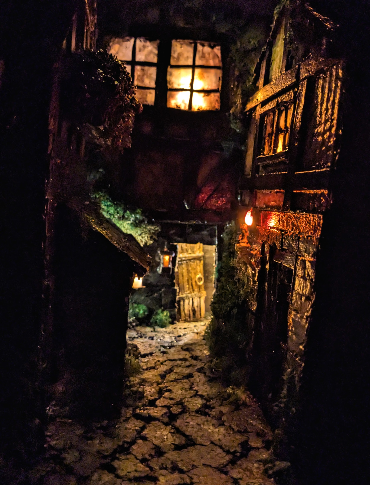

Adventure Cat Game
A short game created for HackUMass 2025. Two friends and I worked together to create the game from scratch in the allotted 36 hours. We collaborated to create the story, and then split the rest of the workload among us. I was repsonsible for all of the art shown in the game, including sprites and backgrounds. I did not know I would be doing this project until last minute, so all creative ideas were off-the-cuff and we had no time to brainstorm in advance.
Download the game!
Grant Proposal
I researched global threat of Tuberculosis, identified a grant suitable to fund the fight against it, and then wrote a 26-page proposal to request those grant funds on behalf of the endTB project. The proposal broke down suggested budgeting for use of grant funds, as well as providing evidence as to how the funds would be used and why it is important that the global issue of TB is addressed.
View grant proposal document.
Minature Street Scene
A minature scene that shows a few houses on a medival-looking street. I spent about 200 hours creating the scene out of creatively repurposed materials. Once I had the houses built (out of cardboard and hot glue), I wired the scene to be lit using a string of fairy lights. This included a handmade candle which is on the outside of one of the houses. The main materials for this project were: cardboard; hot glue; acrylic paint; popsicle sticks; styrofoam; and dollar-store string fairy lights.
